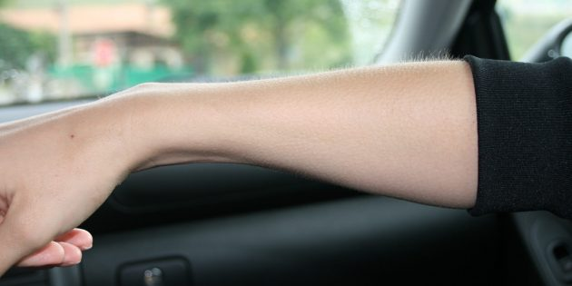
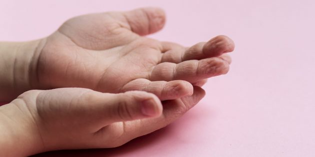
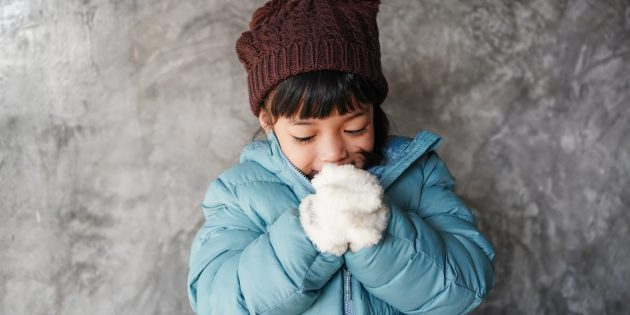

6 вещей, которые наше тело делает не просто так
Икота, мурашки и морщины на намокших пальцах имеют конкретное предназначение.
1. Реакция на щекотку
Раньше такие именитые учёные, как Чарльз Дарвин и Фрэнсис Бэкон считалиC. R. Harris. The Mystery of Ticklish Laughter / American Scientist, что щекотка как‑то связана с чувством юмора и со способностью человека веселиться и строить социальные связи. Однако современные исследователи пришли к выводу, что это скорее раздражающее ощущение. Неудивительно, что в Средневековье щекотку использовалиG. Yamey. Torture: European Instruments of Torture and Capital Punishment from the Middle Ages to Present / BMJ как пытку. Наука считает щекотку защитной реакцией1. A. Bellamy. Why can’t we tickle ourselves? / Medical Press 2. Wattendorf E., Westermann B., Fiedler K., Kaza E., Lotze M., Celio M.R. Exploration of the neural correlates of ticklish laughter by functional magnetic resonance imaging / Cerebral Cortex, возникающей при воздействии на кожный покров. Благодаря ей мы можем вовремя стряхивать с себя всяких неприятных и потенциально опасных тварей — пауков и насекомых. Когда люди жили на деревьях, по которым ползали мохнатые восьмилапые твари, способные одним укусом свалить с ног слона, щекотка была особенно актуальна. Именно поэтому, кстати, вы не можете пощекотать себя: организм понимает, что вы не паук.Хотя, в принципе, с помощью специального роботаIt’s almost impossible to get a laugh by self‑tickling, says David Robson, and the reason why tells us surprising things about the brain and consciousness / BBC, которого собрали в Университетском колледже Лондона, можно обмануть свои инстинкты и заняться самощекотанием. Ещё щекотка может помогатьC. R. Harris. The Mystery of Ticklish Laughter / American Scientist развитию бойцовских навыков. По мнениюDonald W. Black. Laughter / JAMA психиатров Дж. К. Грегори и Дональда В. Блэка, наиболее щекотные места на теле человека — те, что больше всего уязвимы для атак. Психиатр Кристин Харрис утверждаетC. R. Harris. The Mystery of Ticklish Laughter / American Scientist, что когда родители или старшие братья и сёстры щекочут детей, те учатся вырываться и уходить от неприятных прикосновений. Во времена, когда такие прикосновения инициировали всякие саблезубые тигры, умение было крайне полезным.
2. Появление мурашек
Мурашки (иначе — гусиная кожа, или пилоэрекция) достались нам от наших предков‑млекопитающих. В те времена, когда люди были чуть более волосаты, чем сейчас, пиломоторный рефлекс помогал им «распушать шерсть». При опасности, возбуждении или на холоде мышцы волосяных фолликулов сокращались, отчего у человека волосы буквально вставали дыбом, причём по всему телу. У этого явления в прошлом было несколько полезных применений. Во‑первых, распушённая шерсть помогаетWhy Do You Get Goosebumps? / Cleveland Clinic немного согреться. Во‑вторых, благодаря ей существо становится на вид крупнее, что может заронить зерно сомнения в голову хищника: стоит ли есть столь грозно выглядящее создание или лучше поискать добычу помельче. И в‑третьих, пушистая шерсть помогает понравитьсяM. Benedek, C. Kaernbach. Physiological correlates and emotional specificity of human piloerection / Biological Psychology существам противоположного пола — возможно, поэтому девушки с роскошной шевелюрой пользуются большей популярностью. Среди наших родственников‑приматов топорщат1. M. N. Muller, J. C. Mitani. Conflict and Cooperation in Wild Chimpanzees / Advances in the Study of Behavior 2. J. A. French, C. T.Snowdon. Sexual dimorphism in responses to unfamiliar intruders in the tamarin, Saguinus oedipus / Animal Behaviour шерсть, например, шимпанзе и тамарины. В той или иной мере это делают все млекопитающие — даже ваша кошка. У человека, естественно, недостаточно шерсти, чтобы греться и отпугивать хищников. Так что сейчас пиломоторный рефлекс — это просто напоминание о том, что когда‑то мы имели мех, как все приличные приматы. И да, некоторые умеют вызыватьHeathers, J., Fayn, K., Silvia, P. J., Tiliopoulos, N., & Goodwin, M. S. The voluntary control of piloerection / PeerJ мурашки по собственному желанию. Наверное, пару миллионов лет назад это было бы очень крутым навыком, но сейчас на такое можно и внимания не обратить.
3. Икота
Распространённое суеверие гласит: если вы икаете, значит, о вас кто‑то сейчас думает. Но на самом деле икота — рефлекс, предназначенный для удаления попавшего в желудок воздуха. Люди и другие млекопитающие икаютD. Howes. Hiccups: A new explanation for the mysterious reflex / Bioessays в утробе матери. Весьма важным этот рефлекс становится, когда детёныш начинает сосать молоко. Благодаря ему ребёнок может более эффективно поглощать пищу. Икота позволяет младенцу потреблять на 15–25% больше молока, и грудные дети тратят 2,5% своего времени на икание (да, кто‑то и это подсчиталD. Howes. Hiccups: A new explanation for the mysterious reflex / Bioessays). Интересно, что только млекопитающие икают, а земноводные, птицы или рептилии — нет. Но при этом у амфибий есть дыхательный рефлексC. Straus et al. A phylogenetic hypothesis for the origin of hiccough / BioEssays, схожий с икотой, — он помогает головастикам заглатывать воздух жабрами, при этом не позволяя воде проникать в лёгкие. Существуют веские основания рассматриватьC. Straus et al. A phylogenetic hypothesis for the origin of hiccough / BioEssays икоту как эволюционный пережиток, вариацию этого самого рефлекса, унаследованную нами от земноводных предков. Вместо того, чтобы избавиться от рудимента, млекопитающие обратили его себе на пользу. Хотя из‑за икоты иногдабываютLongest attack of hiccups / BBC и неприятности.
4. Сморщивание кожи на пальцах
Из‑за длительного пребывания в воде кожа на руках и ногах покрывается морщинами. И у этого тоже есть причина. Неровности на пальцах помогают людям меньше скользить по влажной почве при ходьбе. К такому выводу пришли1. K. Kareklas, D. Nettle, T. V. Smulders. Water‑induced finger wrinkles improve handling of wet objects / Biology Letters 2. M. Changizi, R. Weber, R. Kotecha, J. Palazzo. Are Wet‑Induced Wrinkled Fingers Primate Rain Treads? / Brain, Behavior and Evolution Том Смолдерс, эволюционный нейробиолог из Университета Ньюкасла, и Марк Чангизи из лаборатории 2AI Labs в Бойсе, Айдахо. Кроме того, Смолдерс экспериментально доказалA gripping tale: scientists claim to have discovered why skin wrinkles in water / The Guardian, что морщины на пальцах позволяли лучше удерживать влажные предметы. А исследованиеN. J. Davis. Water‑immersion finger‑wrinkling improves grip efficiency in handling wet objects / PLOS One 2020 года это подтвердило. Учёные Манчестерского столичного университета выяснили, что благодаря сморщенной коже для захвата влажных предметов требуется примерно на 20% меньше усилий. Раньше считалось, что кожа набухает при контакте с водой в результате некой химической реакции или осмоса — проникновения жидкости в поры. Однако в 1935 году доктора Льюис и Пикеринг выяснилиEver wondered why your fingers go wrinkly in water but not other parts of your body? The answer’s in the evolution of your gripping hands… / BBC, что при повреждении некоторых нервов в пальцах они перестают морщиниться. То есть это не случайный побочный эффект, а полезная реакция организма, появившаяся в результате эволюции. Благодаря ей наши предки лучше лазали по мокрым веткам и сохраняли устойчивость, передвигаясь под дождём.
5. Зевота
Зевота — заразительная штука. Некоторые индивидуумы способны начать зевать, увидев, как это делает кто‑то другой. Или даже просто прочитав это слово. Существует множество теорий, почему люди зевают. Раньше считалось1. Yawning…And Why Yawns Are Contagious / Neuroscience for Kids 2. Yawning / American Scientist, что это обеспечивает приток кислорода, когда в крови повышено содержание углекислого газа. Однако специалисты Университета Мэриленда провели экспериментR. R. Provine, B. C. Tate, L. L. Geldmacher. Yawning: no effect of 3‑5% CO2, 100% O2, and exercise / Behavioral and Neural Biology, изменяя содержание свежего и затхлого воздуха в помещении с испытуемыми, и поняли, что частота зевания от кислорода не зависит. На самом деле зевота служит двум целям. Во‑первых, она используется как механизм терморегуляции1. A. C. Gallup, O. T. Eldakar. The thermoregulatory theory of yawning: what we know from over 5 years of research / Frontiers in Neuroscience 2. J. J. M. Massen, K. Dusch, O. T. Eldakar, A. C. Gallup. A thermal window for yawning in humans: Yawning as a brain cooling mechanism / Physiology & Behavior мозга, охлаждая его при необходимости. Поэтому люди с холодным компрессом на лбу зевают намного реже обычного. Во‑вторых, этот рефлекс заставляет человека становиться более бдительнымC. Herman. What’s in a Yawn / The University at Albany. Если вы скучаете, погрузились в собственные мысли или задремали, зевота вынудит вас прийти в чувство и собраться. Поэтому парашютисты или спортсмены‑экстремалы зеваютYawning may boost brain’s alertness / New Scientist в стрессовых ситуациях. Психологически «заразная» зевотаYawning may boost brain’s alertness / New Scientist развилась у людей и других коллективных животных как способ поддержания бдительности группы. Она служит сигналом уставшим членам стаи, чтобы они не теряли внимательности.
6. Дрожь
Дрожь — это механизм терморегуляции1. D. Brown, H. Brugger, J. Boyd, P. Paal. Accidental hypothermia / The New England Journal of Medicine 2. D. Robertson, I. Biaggioni, P. A. Low. Primer on the Autonomic Nervous System, который помогает нам согреться. Скелетная мышечная ткань от холода начинает сокращаться, и эта активность помогает организму вырабатывать больше тепла.Интересно, кстати, что младенцы дрожать не умеют. Поэтому они сильнее страдают от холодаR. F. Soll. Heat loss prevention in neonates / Journal of Perinatology, чем взрослые. Ситуацию несколько исправляет повышенное количество у них бурой жировой ткани, но всё равно: оставлять детей на морозе — плохая идея.